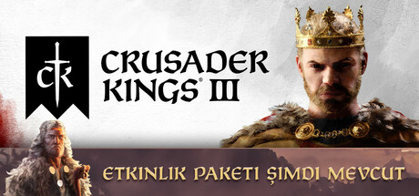

Crusader Kings III
Sev, savaş, entrika çevir ve yücel. Crusader Kings III'ün büyük stratejisinde soylu hanenin mirasını belirle. Orta Çağ'ın geniş ve destansı simülasyonunda hanedanlığının soyunu yönetirken ölüm yalnızca bir başlangıç.
Yaş Değerlendirmesi : 12+
Bu Oyun Hakkında
Mirasın bekliyor. Soylu haneni seç ve nesiller süren bir Orta Çağ destanında hanedanlığını yücelt. Savaşmak, saltanatını kurmak için kullanabileceğin çok sayıdaki araçtan yalnızca biri. Gerçek bir strateji için diplomaside ustalık, kraliyetin konusunda engin bilgi ve gerçek kurnazlık gerekir. Crusader Kings III, Paradox Development Studio'nun yaptığı, sürükleyici büyük strateji ile derin, dramatik orta çağ rol yapmayı birleştiren popüler serinin devamıdır.
Hanenin başına geç ve özenle araştırılmış Orta Çağ'da hanedanlığını genişlet. 867 ya da 1066 yılında başlayıp toprak, unvan ve vasallar elde edip soylu kanına yakışır bir krallık kur. Ölümün yalnızca yeni bir sayfaya geçiştir. Soyun planlı... Ya da plansız yeni oynanabilir varislerle devam eder.
Köylüler, şövalyeler, saray mensupları, ajanlar, üçkâğıtçılar, soytarılar ve gizli aşk ilişkileriyle dolu bir dünya simülasyonunu keşfet. Aşk yaşanılabilecek, ihanet edilebilecek, idam edilebilecek ya da sinsice etkilenebilecek çeşitli tarihi karakterler.
Karla kaplı İskandinav topraklarından Afrika Boynuzu'na, batıda İngiliz Adaları'ndan doğuda Burma'nın egzotik zenginliklerine kadar uzanan geniş bir orta çağ haritasını keşfet. Binlerce özel bölgeyi, dukalığı, krallığı ve imparatorluğu ele geçir, fethet ve yönet.
Dindar bir kral olarak dini kuvvetleri kendi tarafına çek ya da ebedi ünle sonsuz lanet arasında mücadele ederken kendi inancını kur.
Kültürüne yenilikler getirip büyük kale ve donanımlar inşa ederek krallığının zenginliğini, prestijini ve güvenliğini artır.
Sınırsız sayıda yoldan gidebilirsin: Muhtemel her durum ve karakter için hazırlanmış binlerce dinamik etkinlik ve hayatını değiştirecek kararı deneyimle. Tarih kitaplarında yerini garantilemenin sayısız yolu var.
Yetişkin İçerik Açıklaması
Geliştiriciler içeriği şu şekilde tarif ediyorlar
Bu oyunda her yaşa uygun olmayan veya iş yerinde görüntülenmesi sakıncalı olabilecek içerikler yer alabilir: Az Sıklıkta Çıplaklık veya Cinsel İçerik, Genel Yetişkin İçerik
Sistem Gereksinimleri
İşletim Sistemi *: Windows® 10 Home 64 bit
İşlemci: Intel® Core™ i5-4670K / AMD® Ryzen™ 5 2400G
Bellek: 8 GB RAM
Ekran Kartı: Nvidia® GeForce™ GTX 1650 (4GB) / AMD® Radeon™ R9 390X (8GB)
DirectX: Sürüm 11/12
Depolama: 8 GB kullanılabilir alan